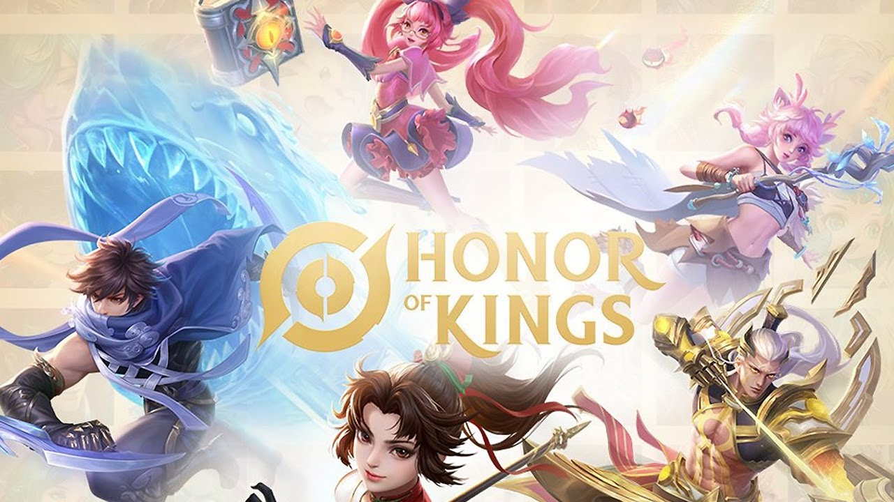

INFORMACION PERSONAL
• Seudonimo: Lunix
• Pais: Bolivia
• Edad: 18 años
• Cumpleaños: 16 de Diciembre
• Hobbies: Dibujar y jugar juegos
• Seudonimo: Lunix
• Pais: Bolivia
• Edad: 18 años
• Cumpleaños: 16 de Diciembre
• Hobbies: Dibujar y jugar juegos
Primeramente elegi por Luriz, que es una fucion de mis dos nombres, se preguntaran porque cambie la "z" por "x", el motivo es cuando me descargue el juego honor of kings donde me pedia un nombre para el juego donde tenia que ponerme Luriz, pero por equivocacion puse Lunix y pense no esta mal es nombre, y me quede con ese nombre al final porque me gusto.
Yo no conocia nada de anime hasta que una amiga me dijo que es y me recomendo un anime, ahi fue donde empezo una nueva etapa en mi vida, al entrar al mundo del anime me entere que dragon ball y caballeros del zodiaco eran animes, yo pensaba que eran caricaturas no pensaba que eran animes. Empece viendo anime en youtube, porque no sabia donde mas mirar anime, los primeros animes que vi fueron Sakura Card Captor, Inuyasha, Vampare Night y Full Moon. Los Animes de esa epoca eran muy buenos, hoy en dia no me gustan algunos, ya que me parecen repetitivos.